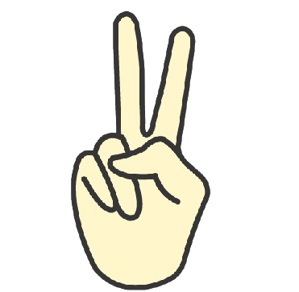
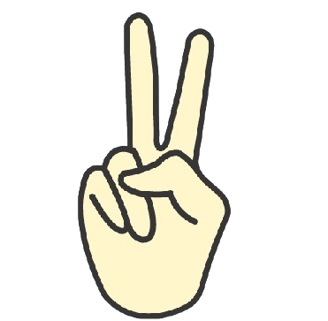

Welcome to the Rock, Paper, Scissors, SHOOT!
Rock, Paper, Scissors, SHOOT! is a website where you can have fun and play the classic game of Rock, Paper, Scissors with a computer. We offer information about the game history and the weapons you can use, and two modes of the game: Infinite Matches where you play limitless matches, and First to Three where you play until you or the computer reach 3 points. Enjoy the game of probability and luck!
If you're interested in the history of the game, go to the History page! It will tell when and where the game originated, how it popularized, and other interesting facts!
Wanna know what weapons can you use? Go to the Weapons Page! The information about the weapons that the player may choose from can be seen in the Weapons Page! Don't miss this out! It also serves as a guide for the player.

 

Rock can defeat scissors, but it can be defeated by paper.
Paper can defeat rock, but it can be defeated by scissors.
Scissors can defeat paper, but it can be defeated by rock.
Never-ending fun! Go to the Infinite Matches page! You can play as many matches as you want and as many as you can. This game mode provides infinitely many matches, so you can play as long as you want!
Just want a quick match? Go to the First to Three page! The match in this game mode will end if you or the opponent already gained three (3) points - which explains the game mode's name. So if you want to play a quick match, go to the First to Three and you will surely enjoy!